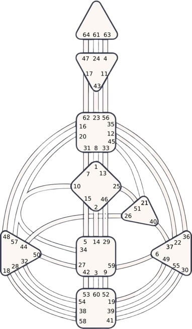
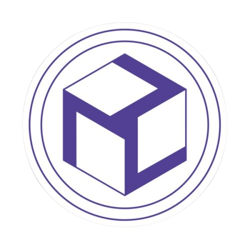
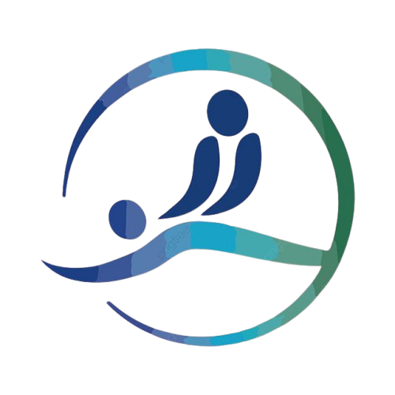

Descubre una mirada integral de tus potenciales, dones y talentos.
Y tu forma única y diferente de ser de servicio para la humanidad.

El Diseño Humano es un sistema de autoconocimiento que utiliza la fecha, hora y lugar de nacimiento para crear un "mapa" de la energía y el diseño energético único de una persona. Sirve para entender la propia naturaleza, cómo tomar decisiones de forma auténtica, mejorar las relaciones y aprovechar las habilidades naturales, y funciona eliminando el condicionamiento social acumulado para poder vivir de manera más alineada con la esencia propia.

El Reiki es una técnica japonesa de imposición de manos que canaliza la "energía vital universal" para promover la curación, relajación y equilibrio físico, mental y espiritual, sin ser una religión, sino un método para armonizar el flujo de energía que fluye por todos los seres vivos, ayudando a liberar bloqueos y estrés, y regular las emociones.

El Shiatsu Biodinamico® es una técnica de masaje japonesa combinada con movimientos de yoga y armonización de osteopatía que se realiza mediante la presión rítmica de pulgares, palmas y dedos en puntos específicos del cuerpo, llamados meridianos, para equilibrar la energía vital (ki o chi) y promover la autocuración, el bienestar físico y mental, similar a la acupresión, pero sin agujas, y se basa en los principios de la Medicina Tradicional China para mejorar la circulación de fluídos y energía, relajar tensiones y aliviar dolores y equilibrar emociones.
La Aromaterapia es una herramienta holística complementaria que usa aceites esenciales extraídos de plantas (flores, hojas, raíces) para mejorar el bienestar físico, mental y emocional, aprovechando la conexión entre el olfato y las emociones para promover la relajación, reducir el estrés y aliviar síntomas, inhalando los aromas o aplicándolos vehiculizados en cremas, geles o lociones para masajes, spray o difusores.